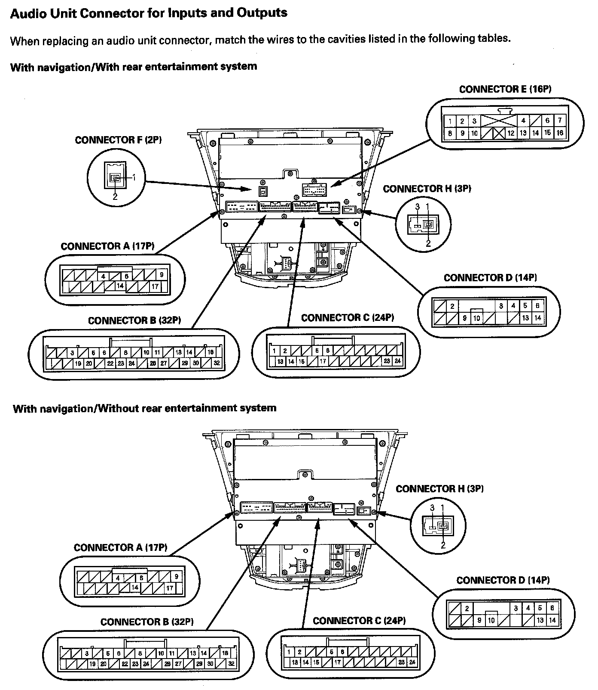
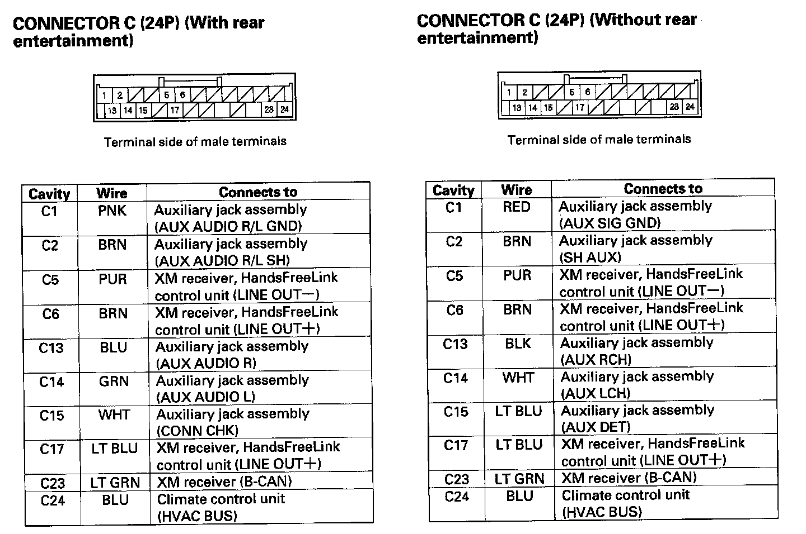
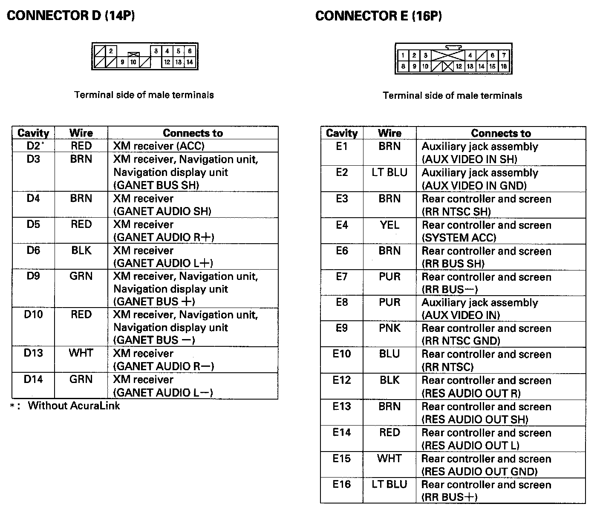
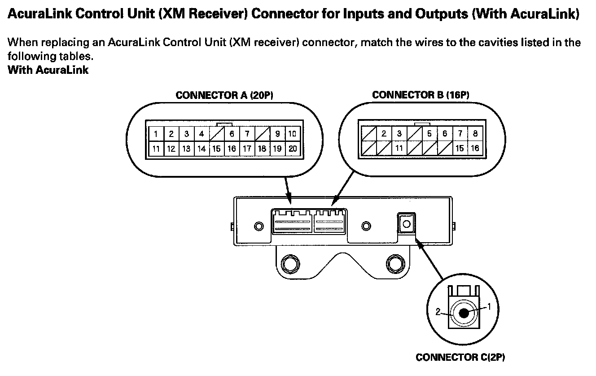
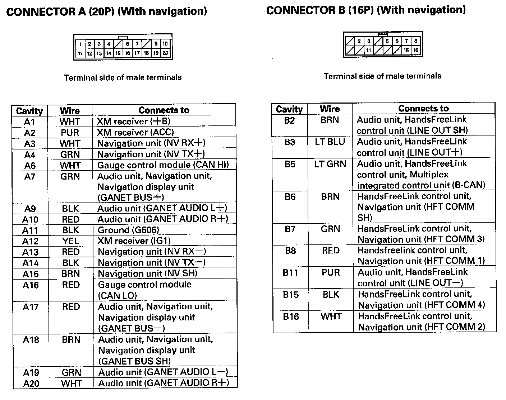
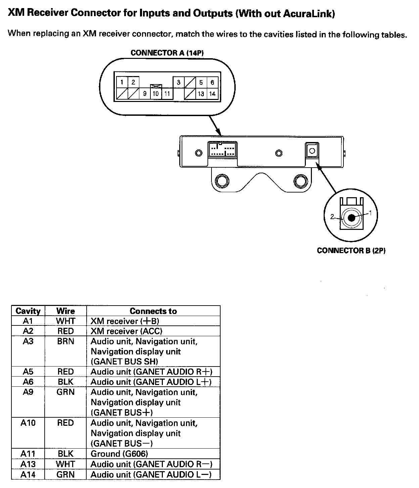

Audio System
Audio SystemSystem Description
Overview
The audio unit acts as the processor for all audio functions. You can select the audio functions from the audio panel, the audio remote (on steering wheel), or by using the navigation voice control system. The audio display provides the current front and rear audio status. For vehicles with the navigation option, additional audio information is available by touching the audio button. (See the owner's manual for more details.)
Each audio component passes its audio or audio signal to the audio unit. In addition, it communicates with the audio unit via the GA-Net bus. Any open connection in this circuit will cause audio and navigation functions to appear inoperative.
With the ELS and the premium sound system, an audio amplifier unit powers the speakers.
The 6 DVD-A (6 CD) changer output can be directed to the audio unit.
The XM can be output to either the front or the RES (rear entertainment system). However, if the XM is playing in the front, the CD changer cannot be used for the RES. The RES (built into the audio unit) can be used to play a CD in the rear.
A security signal is daisy-chained between the audio, RES and navigation components for integration into the vehicle's alarm system.
Speed-sensitive volume compensation (SVC)
Some audio systems are equipped with speed-sensitive volume compensation (SVC). The navigation or audio unit receives the vehicle speed pulse (VSP) from the PCM. The system processes the speed input and increases the navigation or audio system volume level as the vehicle speed increases to compensate for the various interior noise that occurs at higher speeds. When the vehicle slows down, the volume returns to its normal level. The SVC has four settings: SVC OFF, LOW MID and HIGH that can be adjusted using the navigation or audio unit. The SVC comes from the factory with the MID set as the default.
To change the audio unit SVC setting, press the "tune folder sound" knob repeatedly until the SVC is displayed. Rotate the knob to adjust the SVC to the desired setting (SVC OFF, LOW MID, or HIGH).
To change the navigation unit SVC setting, press the AUDIO button, and then select the SOUND icon on the navigation display. Press the navigation display to select the desired setting (OFF, LOW, MID, HI).
Overview
The optional navigation system provides voice control for radio, XM, CD player and RES functions. The GA-Net (audio unit) communicates the voice control commands. When using the talk back or route guidance (RG), only the center speaker is muted and the front speakers give the navigation instructions. When using HFL/AcuraLink, the center speaker, the rear speakers, and the subwoofer are muted and the front speakers give the telephone sound. When using HFL/AcuraLink and RG or talk back, the center speaker, the rear speakers, and the subwoofer are muted and the front speakers give the telephone sound and the navigation instructions, but not the RES headphones. GA-Net bus passes the muting commands. For more information, see the navigation section. The outline of the audio interruption function is shown in the given table.
System Diagram
NOTE: All items may not apply to this vehicle. See the Owner's Manual for more information.
Audio Glossary
Audio Unit Connector For Inputs And Outputs Part 1:

Audio Unit Connector For Inputs And Outputs Part 2:

Audio Unit Connector For Inputs And Outputs Part 3:

Audio Unit Connector For Inputs And Outputs Part 4:

Audio Unit Connector For Inputs And Outputs Part 5:

Audio Unit Connector For Inputs And Outputs Part 6:

Audio Unit Connector for Inputs and Outputs
Stereo Amplifier Connector For Inputs And Outputs Part 1:

Stereo Amplifier Connector For Inputs And Outputs Part 2:

Stereo Amplifier Connector For Inputs And Outputs Part 3:

Stereo Amplifier Connector for Inputs and Outputs
AcuraLink Control Unit (XM Receiver) Connector For Inputs And Outputs (With AcuraLink) Part 1:

AcuraLink Control Unit (XM Receiver) Connector For Inputs And Outputs (With AcuraLink) Part 2:

AcuraLink Control Unit (XM Receiver) Connector for Inputs and Outputs (With AcuraLink)
XM Receiver Connector For Inputs And Outputs (Without AcuraLink):

XM Receiver Connector for Inputs and Outputs (Without AcuraLink)
Interface Dial Connector For Inputs And Outputs:

Interface Dial Connector For Inputs And Outputs
Auxiliary Jack Assembly Connector For Inputs And Outputs (Without Rear Entertainment):

Auxiliary Jack Assembly Connector for Inputs and Outputs (Without Rear Entertainment)